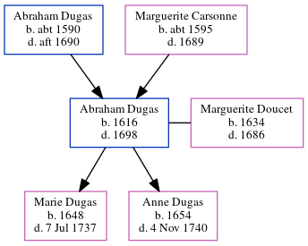

Abraham Dugas 1616 - 1698
[ Home ] | [ Calendar ] | [ Surnames Index ] | [ Census Index ] | [ Family History ]The child of Abraham Dugas and Marguerite Carsonne, Abraham Dugas, the 10 times great-grandfather of Michele Copp (née Phillips), was born in Toulouse, Jura, Franche-Comte, France in 16161 and married Marguerite Doucet (with whom he had 2 children: Marie and Anne) in Port Royal, , New Brunswick, Canada in 16471, which is also where he died in 1698.
Parents
- Abraham was born c. 1590
- Marguerite was born c. 1595
Children
- Marie was born in 1648
- Anne was born in 1654
Citations
- U.S. and International Marriage Records, 1560-1900 Online publication - Provo, UT, USA: The Generations Network, Inc., 2004.Original data - This unique collection of records was extracted from a variety of sources including family group sheets and electronic databases. Originally, the information was deriv
Family Tree
Generated by ged2site. Last updated on Jun 6, 2024